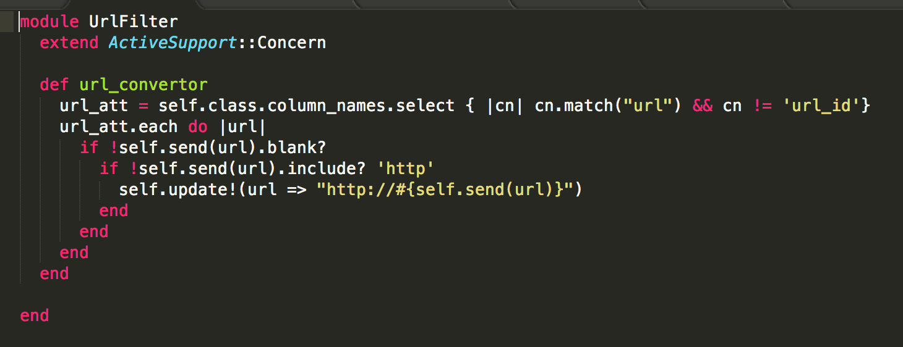

What I've learn about Rails so far
Sept 26 2015
It's been 9 months since I worked as a professional rails developer. What have I learned?
In a big picture, what matters the most is...
Why using instance method is better than using variables(@articles) in the controller
When you working on rails app, and need to create API that contains customized information from database, I was told that make instance variables like @articles, @reviews are the best way. Here is example from my Favorite Food Truck app
There is nothing wrong with above code. @review is new instance of Review class, @foods represents all Food instance ... This is definitely how I learned to do.
Compaire with this controller.
I guarantee you there are lots of stuff going on index.html.erb file. There are several model rendering, display user information, startup accounts ... but where are the methods?
They are mostly in the view. Technically speaking, it is in model. Instead of making instance variable, each time when we need information, just call the method and get information from database. Here is the example
So Why this is better than having @other_events in controller? First, In case there is an error on the instance method, let's say we called @events, which returns all events and render 1) event.name and 2) event.date. What happen if one of event doesn't have a date? As soon as you load the event.html.erb, it will throw an error. You don't want that. If there is going to be an issue, you want to have it as smallest scale as possible.
Second, functions can be used everywhere but instance variable in the controller isn't. You need to keep specify what @events are in the each controller.
Last, it is much easier to test functions in the model than controller.
Thus, the argument of fat model vs thin controller.
Fat Model and Thin Controller
Controller is the happening place. If route.rb is the map of the app, the controller is the agency to hook up with actions and views. It dictates what to do - like CRUD, and what will render. The reason I am a big fan of thin controller is that it will make easier to figure out what is going on or what is wrong. Because as the app grow, it will have more complicated routes and actions. So I like to have all functions in the model and keep controller small.
DRYer code - Another benefit of moving functions to the model is recyclability of your code(functions). When you made functions in the model, you can use everywhere as long as you can call it via its instance (or class).
Rails Helper Functions
Concerns
One fine afternoon, I've landed in a task to check all the urls in every model and put 'http://' if it is external link. For instance, our startup model has attribute - company_url, document model has video_url, user has facebook_url, linkedin_url etc.
So whenever new instance of these class created, check the external url related attribute and put http:// if there is non (e.g. www.youtube.com).
I had pretty good idea how to check url related attribute and change it but the question is Where am I gonna put this function??
First, my reaction is 'helper' folder - more exact, application_helper.rb. The great thing about application_help is that these functions are available cross the stack. You can call it anywhere! But how can I check the class attributes with functions?
You may have noticed that Rails 4 creates concerns file under 'controller' and 'model'. What is concern and how we can use it?
Here comes 'concerns'
Concerns are essentially modules that allow you to encapsulate model roles into separate files to DRY up your code. Here you can use concern in the model
This callback(url_convertor) will run before_save evern instance of the model.
Services Object
Scope and Direct Query from PostgreSQL
Selective Validation
Delegte
validates on:
Lamda
relationships and alias
Polimophism (as: )
Small but handy tricks
self.lookup
read_attribute(:url).try(:downcase)
Spec - Trust me. Something is wrong here